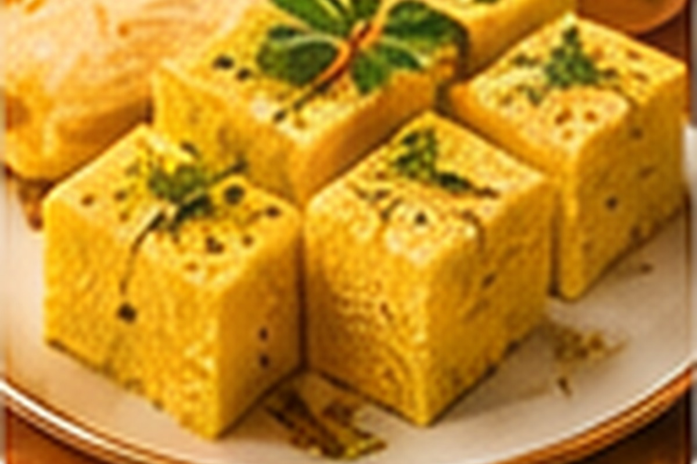
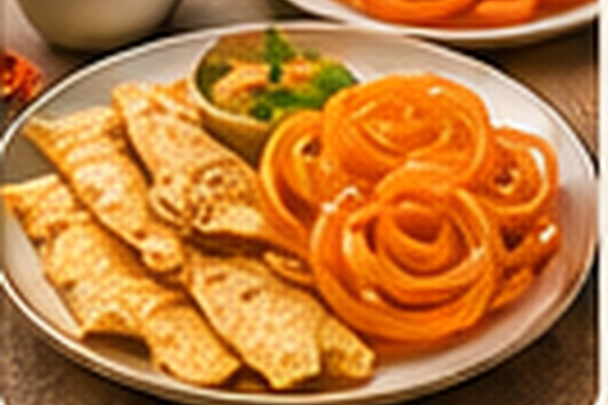

Gujarati Thali
A regional meal bringing together a variety of Gujarati flavours.
Ahmedabad / Food
Discover Gujarati food traditions and popular regional dishes.
A regional meal bringing together a variety of Gujarati flavours.

A popular steamed Gujarati snack.

A well-known Gujarati food pairing.